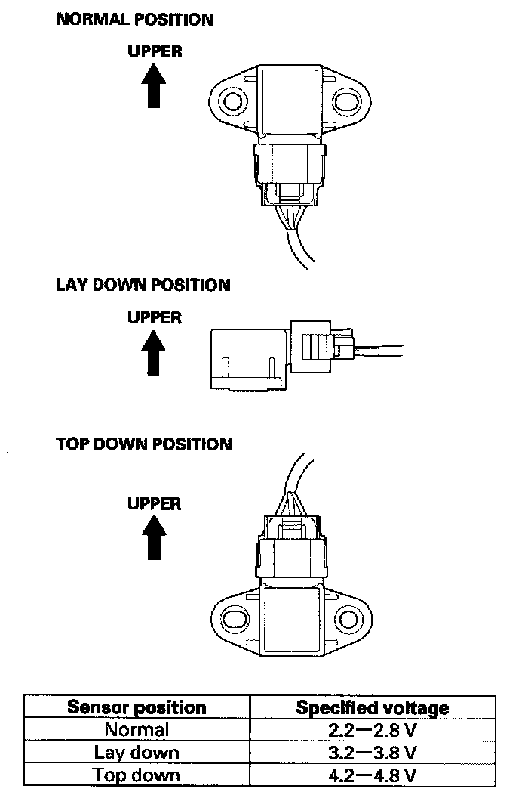

Acceleration Sensor: Testing and Inspection
Vertical Acceleration Sensor Inspection1. Turn the ignition switch OFF.
2. Remove the vertical acceleration sensor. Do not disconnect the sensor connector.
3. Connect the HDS to the data link connector (DLC).
4. Start the engine, and wait 5 Seconds.
5. With the HDS, check the VERTICAL_S VOLTAGE (F), (RR), or (LR) in the active damper system DATA LIST at a "normal", "lay down", and "top down" each sensor positions by moving it (see table).

6. If the voltages shown on the HDS are within the specified voltage in all positions, the sensor is OK. If the voltages are out of specification in only one position, the sensor is fault.
7. Turn the ignition switch OFF.
8. Install the vertical acceleration sensor in the proper position.